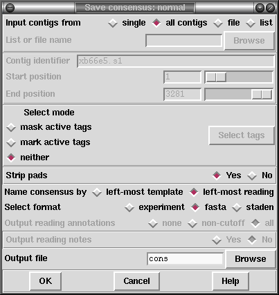

This is the usual consensus type that will be calculated (and is available from the gap4 File menu). The currently active consensus algorithm is selected from the "Consensus algorithm" dialogue in the main gap4 Options menu (see section Consensus Algorithm).
Contigs can be selected from a file of file names or a list. In addition, tagged regions can be masked or marked (see section Active tags and masking), and output can be in Experiment file, fasta or staden formats. If experiment file format is selected a further menu appears that allows users to select for the inclusion of tag data in the output file.

The contigs for which to calculate a consensus can be a particular "single" contig, "all contigs", or a subset of contigs whose names are stored in a "file" or a "list". If a file or list is selected the browse button will be activated, and if it is clicked, an appropriate browser will be invoked. If the user selects "single" then the dialogue for choosing the contig, and the section to process, becomes active.
If the user selects either "mask active tags" or "mark active tags" the "Select tags" button is activated, and if it is clicked, a dialogue panel appears to enable the user to select which tag types should be used in these processes. If "mask" is selected all segments covered by the tag types chosen will not be written as ACGT but as defi symbols. If "mark" is selected the tagged segments will be written in lowercase characters. Masking is useful for producing a sequence to screen against other sequences: only the unmasked segments will produce hits.
The "strip pads" option will remove pads ("*"s) from the consensus sequence. In the case of experiment files this will also automatically adjust the position and length of the annotations to ensure that they still mark the correct segment of sequence.
Normally the consensus sequences are named after the left-most reading in each contig. For the purposes of single-template based sequencing projects (eg cDNA assemblies) the option exists to "Name consensus by left-most template" instead of by left-most reading.
The routine can write its consensus sequence (plus extra data for experiment files) in "experiment file", "fasta" and "staden" formats. The output file can be chosen with the aid of a file browser. If experiment file format is selected the user can choose whether or not to have "all annotations", "annotations except in hidden", or "no annotations" written out with the sequence. If the user elects to include annotations the "select tags" button will become active, and if it is clicked, a dialogue for selecting the types to include will appear.